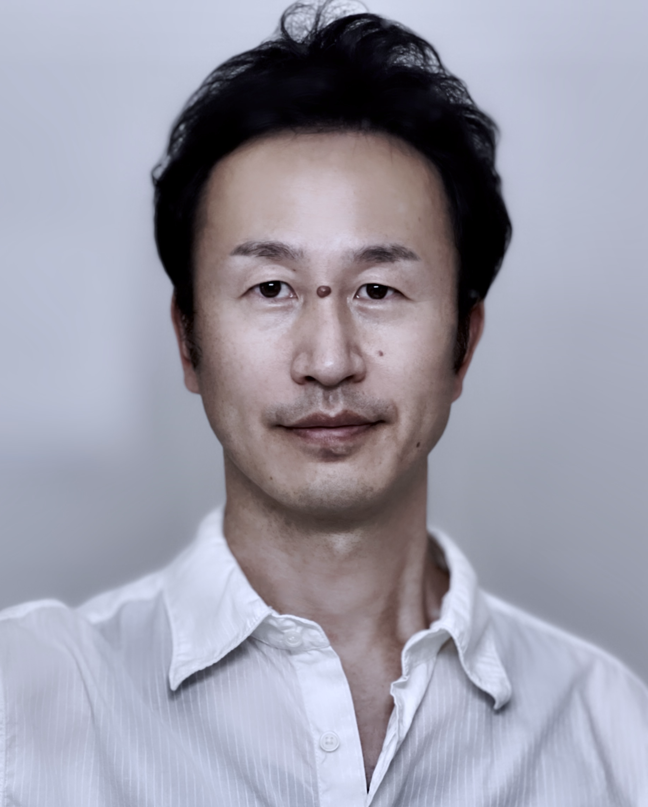

BUKATSU
役を生きる。
旅に出ますか？
行き先が定まっていないのに出かけても、どこにも辿り着けません。それと同じ状態で現場に立っていないでしょうか？現場で必要以上の緊張に襲われたり、演出に戸惑ったりするのはそのせいです。
作品づくりに関わる目的は、「観客にメッセージを届け、人生に影響を与えること」。台本を読み解き、目的から逆算して自分の『地図』を描く。本ワークショップでは、メソッドやテクニックの前に、絶対的に必要な「台本読解力」を徹底的に鍛え、プロを育成します。

地図を持ったら、役に寄り添う。
歩くのは自分ではなく、演じる「役」です。その人生に寄り添うために、自分自身への問いかけを続けます。どんな感情の起伏であれ、再現性を保ち、監督の演出意図に即座に応えられる本物の技術を。
「演出しない」という強さ
講師が正解を与えることはありません。正解を握っているのは現場の監督だからです。代わりに、あらゆる演出に対応できる究極の「準備の方法」を共有します。
なぜ『部活』なのか
俳優を「個人のアートを表現する人」ではなく、作品を共に創り上げる職人の一員「俳優部」として育てる場。泥にまみれながらも一歩ずつ進む、あの熱い日々と同じ情熱で芝居を追い求めます。
私たちが大切にする、表現者のための8箇条。
参加者に寄り添う
演出はしない
個人の魅力を引き出す
本が読める俳優に
感情を導き出す
目標を明確にする
意識を高める
言語化力を上げる
半年のスパンだからこそ到達できる、小手先ではない本格的な深化プロセス。
| 08 — AUGUST |
現在地の把握と設計 6ヶ月の個別目標を明確に立て、現在地を自覚。「6つの基本読解」の基礎へと入ります。 |
|---|---|
| 09-11 — SEP-NOV |
論理的構築と現場再現性 メソッド演技の系譜に触れながら、ショートテキストを使用して役の人生を徹底的に組み立てます。 |
| 12 — DECEMBER |
感情の昇華 実体験のシナリオによる実践。頭の理解を超えた、役としての本物の状態・感情を体得します。 |
| 01 — JANUARY |
定着と送り出し これまでの成長を演技技術として定着させ、個人の課題を整理して、次の現場へと送り出します。 |
火曜クラス日程
- 第1回 / 8月18日TUE
- 第2回 / 9月1日TUE
- 第3回 / 9月15日TUE
- 第4回 / 9月29日TUE
- 第5回 / 10月13日TUE
- 第6回 / 10月27日TUE
- 第7回 / 11月10日TUE
- 第8回 / 11月24日TUE
- 第9回 / 12月8日TUE
- 第10回 / 12月22日TUE
- 第11回 / 1/12日TUE
- 第12回 / 1/26日TUE
木曜クラス日程
- 第1回 / 8月20日THU
- 第2回 / 9月3日THU
- 第3回 / 9月17日THU
- 第4回 / 10月1日THU
- 第5回 / 10月15日THU
- 第6回 / 10月29日THU
- 第7回 / 11月12日THU
- 第8回 / 11月26日THU
- 第9回 / 12月10日THU
- 第10回 / 12月24日THU
- 第11回 / 1/14日THU
- 第12回 / 1/28日THU
| 受講期間 | 2026年8月〜2027年1月（全12回） |
|---|---|
| 時間枠 | 両クラス共通 10:00 - 14:00 (4時間) ※進捗状況により30分程度延長する場合があります。 |
| 総定員 | 2クラス合計 20名限定 （少人数指導維持のため） |
| 受講費 | 33,000円（税込・全教材費含む） 一括、または分割（5,500円 × 6回）が選択可能 |
| 決済方法 | メンバーペイによる決済 （初回前日までにお手続き） ※参加決定後あらためてご連絡します。 |
| 場所 | 都内（主に世田谷区内）の公共施設 |
| 振替制度 | もう一方の曜日クラスへ振替可能（月またぎ調整可・次期への振替は不可） |
俳優が全力で「役の人生」を生き、どうしようもないほどの人間性をさらけ出す。その瞬間に、観客の心に本物の変化が生まれます。皆さんの成長の転機となる、忘れられない時間にしましょう。

島田 伊智郎 / 映画監督・脚本家・指導者
映画『消えない虹』（各配信プラットフォームにて公開中）監督・脚本。
24年にわたり、日本映画界の第一線で多くの監督陣を支える助監督を歴任。2015年より演技ワークショップ主宰として独立し指導をスタート。過去7期に渡り、プロダクション所属俳優を含む延べ390名以上の指導実績を誇る。
表現を自由に探求するために、心理的・肉体的な「安全な場」の確保を徹底しています。他者への敬意、ハラスメントの完全防止、指導時における身体接触の事前同意プロセスなど、業界基準以上のクリーンな環境を用意して皆様をお待ちしています。
【部活】第8期 応募要項
メール件名を「部活第8期応募」とし、本文に以下項目を記載のうえご応募ください。
1. 氏名（芸名） / 2. 年齢 / 3. 所属（フリーはフリーと記載） / 4. 連絡先 / 5. 希望曜日（第2希望まで）
※ご自身のプロフィール資料（PDF等）を必ず添付してください。
応募締切：2026年8月17日（月）17:00 まで
※定員（各10名）に達し次第、期日前でも受付を締め切ります。
shimada.workshop@gmail.com